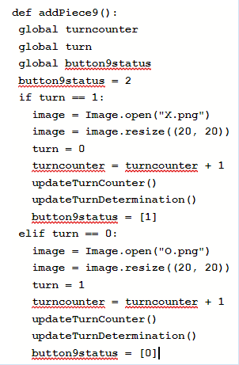
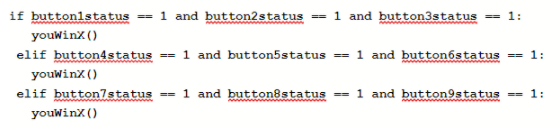

My program's purpose is to run a standard game of Tic Tac Toe. My program functions by allowing two players (X or O) to each choose their own space and attempt to match three icons in a row first. The input is the ability to select any space through the nine button boxes available, and the output is the icon's placement in the box, as well as the determination of who wins after enough icons are lined up. Added to all of this, after the game is won, you may reset everything and play again with the reset button. This action may also be performed midway through a game.
 The name of the list used was button_status inside of addPiece_():, with the underscore signifying whatever button it was the certain list was attached to, in this case, 9. The data in my list (button_status) represents whether a button belongs to Xs (1) or Os (0). The selected list manages complexity because it prevents buttons from being mistaken as the opposing teams’ by certifying their status as either X or O without making separate commands for each team to place their icons down. Without using this list, the code would be much lengthier.